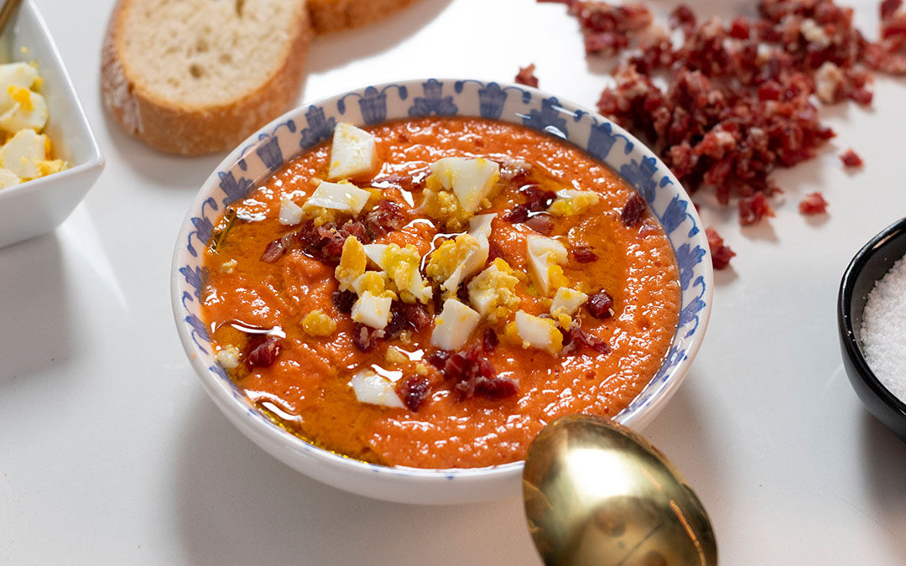
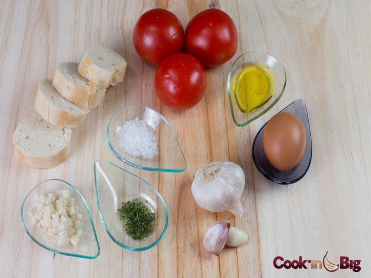
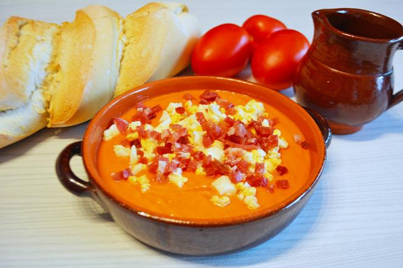

Veámos como hacerlo paso a paso

Salmorejo Cordobés
Paso 1: Ingredientes
- 1kg de tomates maduros
- 100g de pan
- 1 diente de ajo
- 50ml de aceite de oliva virgen extra
- Sal al gusto

Paso 2: Preparación
Ponemos el pan en remojo con un poco de agua. Trituramos los tomates con el ajo y agregamos el pan escurrido.

Paso 3: Servir
Añadimos el aceite poco a poco mientras batimos. Servimos con huevo duro y jamón picado.